| Tipo de Foguete | Função Principal | Exemplos |
|---|---|---|
| Lançador Espacial (Orbital) | Colocar satélites, sondas e naves espaciais na órbita da Terra ou em rotas interplanetárias. | Falcon 9, Ariane 6, Saturn V |
| Foguete de Sondagem (Suborbital) | Realizar experimentos científicos e coletas de dados na alta atmosfera sem entrar em órbita. | VS-30, Black Brant |
| Foguete de Propulsão / Estágio Superior | Ajustar a trajetória de carga útil ou realizar manobras de transferência orbital no espaço. | Centaur, Briz-M |
| Foguete Reutilizável | Pousar de volta na Terra após o lançamento para ser reutilizado e baratear o custo espacial. | Falcon Heavy, Starship |
